行程
九天的动线是一条由西向东、只前进不回头的直线：阿姆斯特丹（3 晚）→ 布鲁塞尔（2 晚）→ 卢森堡市（1 晚）→ 布达佩斯（2 晚）。全程用欧铁串联，单段最长 5 小时 50 分，其余都在 3.5 小时以内。行李只需打包一次，中途三次搬家均为「退房→车站→入住」的半日节奏，不折损白天游玩时间。
周四
第 1 天 · 北京 → 阿姆斯特丹
- 全天北京首都 / 大兴机场出发
直飞阿姆斯特丹的航班多为凌晨或午后起飞，飞行约 10 小时 30 分，抵达史基浦机场（Schiphol）为当地下午或傍晚。中欧夏令时比北京晚 6 小时。 - 抵达后史基浦机场 → 市区
机场与阿姆斯特丹中央车站之间火车每 5–10 分钟一班，车程 15–17 分钟，是最快最省心的进城方式。出关后先买 OV-chipkaart 或直接用感应式银行卡刷闸机。 - 19:30酒店入住 · 水坝广场简单晚餐
当晚不安排任何景点。放下行李后到住宿所在片区随便吃点，沿运河走 20 分钟就回酒店——第一晚的任务只有一个：把生物钟按到当地时间。
住宿：阿姆斯特丹中央车站—水坝广场一带（步行可达运河区，见第 4 模块）
周五
第 2 天 · 阿姆斯特丹 · 黄金时代与运河
- 08:30酒店出发 → 博物馆广场
从中央车站一带乘 2 / 5 / 12 路电车到 Rijksmuseum 站，约 15 分钟。两座博物馆门对门，安排在同一个上午是最高效的组合。 - 09:00荷兰国立博物馆 Rijksmuseum
开门即入，直奔二楼「荣誉廊」看伦勃朗《夜巡》。9 点刚开馆时《夜巡》前几乎没人，10 点后旅行团涌入就很难拍全景。建议停留 2.5 小时。 - 12:00博物馆广场草坪 · 野餐或周边简餐
博物馆区周边餐厅价格偏高，广场草坪是本地人的日常午餐地。也可以走到 De Pijp 片区，那里选择更多也更便宜。 - 13:30梵高博物馆 Van Gogh Museum
全程按时间线陈列，200 余幅油画 + 500 幅素描，看《向日葵》《卧室》《杏花》。必须提前在官网选定时段订票，现场基本买不到。建议停留 2.5 小时。 - 16:30辛格运河 / 花卉市场一带慢走
从博物馆区往市中心方向散步，穿过 Spiegelkwartier 古董街，路过辛格运河上的漂浮花卉市场（Bloemenmarkt）。这是一段不需要买票的城市观察。 - 18:30运河游船（夜航）
从国立博物馆或安妮之家码头登船，1 小时日间/夜间巡游。黄昏时段最好——上船时天还亮，返程时运河两岸灯光已亮起，一趟看两种阿姆斯特丹。 - 20:30唐人街 / 红灯区外围晚餐
老城区餐馆密集。红灯区（De Wallen）可顺路穿过，白天看建筑、晚上看灯，但绝对不要对橱窗拍照。
住宿：同前一晚，不搬家
周六
第 3 天 · 桑斯安斯风车村 + 老城
- 08:00中央车站 → 桑斯安斯风车村
乘火车至 Zaandijk Zaanse Schans 站（约 17 分钟，需在 Zaandam 换乘一次），下车步行 10 分钟过桥即到。早班车能赶上风车村最安静的两个小时。 - 09:00桑斯安斯风车村 Zaanse Schans
保存完好的 18–19 世纪赞河工业村落，绿色木屋 + 运转中的风车 + 奶酪作坊 + 木鞋工坊，进村免费，单座风车与作坊单独收费。停留 2.5–3 小时。周六上午人已经开始多，尽量 11 点前撤离。 - 13:00返城 · 中央车站一带午餐
回到阿姆斯特丹中央车站，车站周边与 Zeedijk 街一带吃碗印尼/亚洲面食，比老城游客区便宜。 - 14:30安妮之家 Anne Frank House
只在官网售票、不放现场票，务必提前数周定好时段。参观约 1.5 小时，路线是单向的，走完不能再回头。2026 年官网仍在实施定时入场。 - 16:30约旦区 Jordaan 散步
安妮之家出门就是约旦区——阿姆斯特丹最有生活气的老街区，窄巷、独立小店、棕色咖啡馆。这里没有必打卡点，慢慢走就是最好的玩法。 - 18:30水坝广场 · 王宫外观 · 九小街
从约旦区绕回市中心，路过西教堂（Westerkerk）、水坝广场和阿姆斯特丹王宫。九小街（De 9 Straatjes）是运河三条主水道之间的小街群，适合傍晚逛。
住宿：同前一晚，不搬家
周日
第 4 天 · 阿姆斯特丹 → 布鲁塞尔
- 08:30自由补漏 · 市区最后半日
若前两天有票没抢到，这个上午是补课窗口。也可以去阿尔伯特市场（Albert Cuypmarkt）吃一份现做荷兰松饼，或者骑一次共享自行车沿运河绕一圈——这是最「阿姆斯特丹」的方式。 - 11:00退房 · 前往阿姆斯特丹中央车站
行李寄存或直接带着走。国际列车建议提前 30 分钟到站台，Eurostar 需要预留上车时间。 - 12:30阿姆斯特丹 → 布鲁塞尔南站
Eurostar 直达，约 1 小时 50 分；Eurocity Direct（ECD）每小时一班，约 2 小时 08 分到布鲁塞尔南站，价格更低且不用订座。抵达布鲁塞尔南站（Bruxelles-Midi）后换乘地铁 2 / 6 号线进市中心。 - 15:30布鲁塞尔酒店入住
建议住在市中心大广场一带或中央车站附近，放下行李即可步行出游。 - 16:30布鲁塞尔大广场 Grand-Place
雨果称之为「欧洲最美丽的广场」。傍晚的金色阳光打上四周行会建筑的金色立面，是一天中最出片的时段。广场本身免费 24 小时开放。 - 18:00撒尿小童 + 圣于贝尔长廊
撒尿小童比想象中小得多，就在大广场步行 5 分钟处，顺路看一眼即可。圣于贝尔长廊（Galeries Royales Saint-Hubert）是 19 世纪的玻璃拱廊，巧克力店密集。 - 19:30晚餐 · 青口贝 + 比利时啤酒
布鲁塞尔的青口贝（Moules）配薯条是本地标配，主街游客区溢价明显，往小街里走两条街价格就正常了。
住宿：布鲁塞尔市中心大广场 / 中央车站一带（见第 4 模块）
周一
第 5 天 · 布鲁塞尔 · 老城 + 新艺术
- 09:00比利时皇家美术馆
从老大师（鲁本斯、勃鲁盖尔）到马格利特，是理解比利时艺术的主线。热门展区限流，建议提前在线预约。停留约 2.5 小时。 - 11:30王宫广场 · 布鲁塞尔公园 · 艺术山
美术馆出口正对王宫广场（Place Royale），往北穿过布鲁塞尔公园（Parc de Bruxelles）走到国会柱，或者到艺术山（Mont des Arts）俯瞰老城——这是布鲁塞尔最好的免费观景台。 - 13:00老城午餐 · 圣于贝尔长廊一带
长廊与周边小街午餐选择密集。薯条（frites）配蛋黄酱是本地国民小吃。 - 14:30比利时漫画中心
新艺术风格建筑（原 Waucquez 百货），藏 2000 余件原作，能看到《丁丁历险记》《蓝精灵》手稿。彩色楼梯是出片点。建议提前预约，停留 1.5 小时。 - 16:30原子塔 Atomium
乘地铁 6 号线至 Heysel 站。1958 年世博会留下的铁原子结构，高 102 米，可乘高速电梯直达顶层球体俯瞰全城。建议 15:00 后登塔，避开正午强光。停留约 1.5 小时。 - 19:00返回市中心晚餐
原子塔周边餐饮选择少，建议回市中心吃。餐后再回大广场看一次夜景——灯光亮起后与白天完全两种氛围。
住宿：同前一晚，不搬家
周二
第 6 天 · 布鲁日一日 + 转场卢森堡
- 07:30布鲁塞尔 → 布鲁日
从布鲁塞尔任意车站乘 IC 直达，约 1 小时。早班车能在 9 点前抵达，赶在旅行团之前进城。行李可寄存布鲁塞尔南站或布鲁日车站（Bounce 等寄存点约 €6/件）。 - 09:00布鲁日钟楼 Belfry of Bruges
市集广场（Markt）上的 83 米钟楼，爬 366 级狭窄台阶登顶俯瞰全城红屋顶。楼梯很陡，扶手窄，穿好走的鞋。登塔人数受限，旺季建议一早就去排队。停留约 1 小时。 - 10:30市集广场 · 城堡广场 · 圣血圣殿
从钟楼走到城堡广场（Burg）只要 3 分钟，圣血圣殿（Basilica of the Holy Blood）就在广场一角，因保存十字军东征带回的圣血遗物得名，入内免费。 - 11:30布鲁日运河游船
从水上看中世纪建筑是布鲁日最值得的一次消费，约 40 分钟、€10 左右，码头在钟楼附近。船小、低视角，春天还有天鹅贴船游过。 - 13:00午餐 · 圣血广场 / 鱼市场一带
布鲁日的华夫饼和薯条摊随处可见。避开紧贴钟楼的第一排餐厅，往运河边小街走两条街性价比更高。 - 14:30爱之湖 Minnewater · 贝居安修道院
老城南端的爱之湖公园（Minnewater Park）与贝居安修道院（Begijnhof）是世界遗产，白墙庭院极安静。从钟楼步行约 15 分钟，游客密度骤降，是布鲁日最舒服的半小时。 - 16:30返回布鲁塞尔取行李 → 转场卢森堡
布鲁塞尔 → 卢森堡市由比利时国铁 IC 直达，约 3 小时，全天每小时一班，无需订座。注意末班车时间，建议不晚于 17:00 从布鲁塞尔出发。 - 20:30抵达卢森堡市 · 入住
卢森堡全国公共交通免费（2026 年仍执行），从车站到市区、电车公交直接上车即可，无需买票。
住宿：卢森堡市车站 / 老城一带（只有 1 晚，优先选离车站近的，见第 4 模块）
周三
第 7 天 · 卢森堡 → 布达佩斯
- 08:30博克要塞 Bock Casemates
仅现场购票、不开放线上预订，且建议开门即到避开团队。全年约 10:00 开放、17:00 关闭，务必先到这里再逛别的。地下隧道网最深处约 40 米，石拱长廊与炮口俯瞰峡谷的视角独一无二。建议预留 1–1.5 小时。 - 10:00风景走廊 Chemin de la Corniche
被称为「欧洲最美的阳台」，沿老城南侧城墙的悬崖步道，一边是 Grund 谷地与阿尔泽特河，一边是 Bock 岬角。全程平路、免费、24 小时开放，约 30 分钟走完。 - 11:00宪法广场 · 圣母主教座堂 · 威廉二世广场
老城核心三个广场连成一片，步行即可串联。圣母主教座堂为 17 世纪哥特式，免费入内。威廉二世广场旁有市政厅与游客中心。 - 12:00阿道夫桥 Pont Adolphe · 大公宫殿外观
阿道夫桥是卢森堡地标，19 世纪建成的欧洲最大石砌拱桥之一，桥上看峡谷落差最有冲击力。大公宫殿 2026 年导览仅 7 月中至 9 月初开放，10 月只能看外观拍照。 - 13:00老城午餐 → 取行李 → 前往机场
卢森堡市内公交免费，从市中心到卢森堡机场（LUX）约 20–25 分钟。国际航班建议提前 2 小时到。 - 15:30卢森堡 → 布达佩斯（航班）
直飞约 2 小时 10 分。布达佩斯比中欧时间再快 0 小时（同属中欧夏令时，比北京晚 6 小时），抵达后仍是傍晚，时间利用率高。 - 18:00抵达布达佩斯 · 入住
李斯特·费伦茨机场到市区：100E 机场巴士直达 Deák Ferenc tér（约 40 分钟）最快。匈牙利用福林（HUF），市区 ATM 取现比机场汇率好。 - 19:30多瑙河畔夜景 · 链子桥
第一晚不排博物馆，沿河走到塞切尼链子桥，看对岸布达城堡山与国会大厦的灯光倒影。这是布达佩斯最不费力的惊艳。
住宿：布达佩斯佩斯第五区（Deák Ferenc tér 周边，交通枢纽，见第 4 模块）
周四
第 8 天 · 布达佩斯 · 布达与佩斯
- 08:30前往城堡山 · 渔人堡
从 Deák Ferenc tér 乘 16 路公交直达 Szentháromság tér（圣三一广场），约 15 分钟。渔人堡 9 点开门，早到能在回廊上独享国会大厦全景。下层回廊免费，上层观景塔收费；上午光线顺光，拍国会大厦最好。 - 10:00马加什教堂
与渔人堡紧邻，彩色釉面瓦屋顶是它的名片，红绿蓝黄四色拼成几何图案。教堂内可看彩绘玻璃与奥斯曼时期留下的伊斯兰风格装饰。停留约 1 小时。 - 11:30布达城堡区 · 匈牙利国家美术馆
从马加什教堂沿 Tárnok utca 向南步行约 300 米即到。城堡庭院免费；时间紧可只看庭院与露台，从南翼露台俯瞰链子桥与佩斯全景。 - 13:00午餐 · 城堡山脚下或过桥回佩斯
城堡山上的餐厅偏贵。可以下山过链子桥回佩斯吃，顺便把链子桥白天版也走一遍。 - 14:30匈牙利国会大厦（入内导览）
入内必须在官网提前预约，旺季至少提前一周，且需携带护照原件、提前 30 分钟过安检。新哥特式建筑，中央穹顶高 96 米，内部陈列匈牙利圣冠。导览约 50 分钟，只接受跟团进入。 - 16:00多瑙河畔鞋履雕塑 · 圣伊什特万圣殿
国会大厦南侧 300 米就是鞋履雕塑（60 双铸铁鞋），纪念 1944–45 年被杀害的犹太人，没有铭文，驻足本身即是纪念。再走到圣伊什特万圣殿，可登顶看佩斯全景。 - 18:00塞切尼温泉浴场
乘地铁 M1 至 Széchenyi fürdő 站。欧洲最大的药用温泉浴场，新古典主义建筑 + 三个露天大池，蒸汽在傍晚的冷空气里最好看。务必自带泳衣与拖鞋，现场租借贵且排队。停留 2 小时。 - 20:30晚餐 · 泡完温泉后回佩斯市中心
温泉出来去城市公园一带或回第五区吃饭。匈牙利菜分量大，两人点一份汤 + 一份主菜常常够。
住宿：同前一晚，不搬家
周五
第 9 天 · 布达佩斯 → 北京
- 08:30中央市场大厅 Central Market Hall
布达佩斯最大最老的室内市场，一楼卖辣椒粉、鹅肝酱、贵腐酒（Tokaji），二楼是熟食档。买伴手礼在这里最集中，周日休市，周五正常营业。停留 1 小时。 - 10:00自由桥 · 回酒店取行李
市场紧邻绿色的自由桥（Liberty Bridge），顺路走一遍。回酒店退房，确认护照与退税单已备齐。 - 10:30前往机场
从 Deák Ferenc tér 乘 100E 机场巴士约 40 分钟到李斯特·费伦茨机场。国际长途航班至少提前 2.5 小时到。 - 13:00布达佩斯 → 北京 · 国航 CA720
直飞 9 小时 10 分，布达佩斯 13:00 起飞，次日 04:10 抵达北京首都机场 T3。当天只剩出发，不排任何景点。
景点
按四座城市分组的必去与小众清单。每张卡都给出精确的 Google 地图链接和「导航」按钮，点一下即可唤起手机地图 App 直接导航。
荷兰 · 阿姆斯特丹
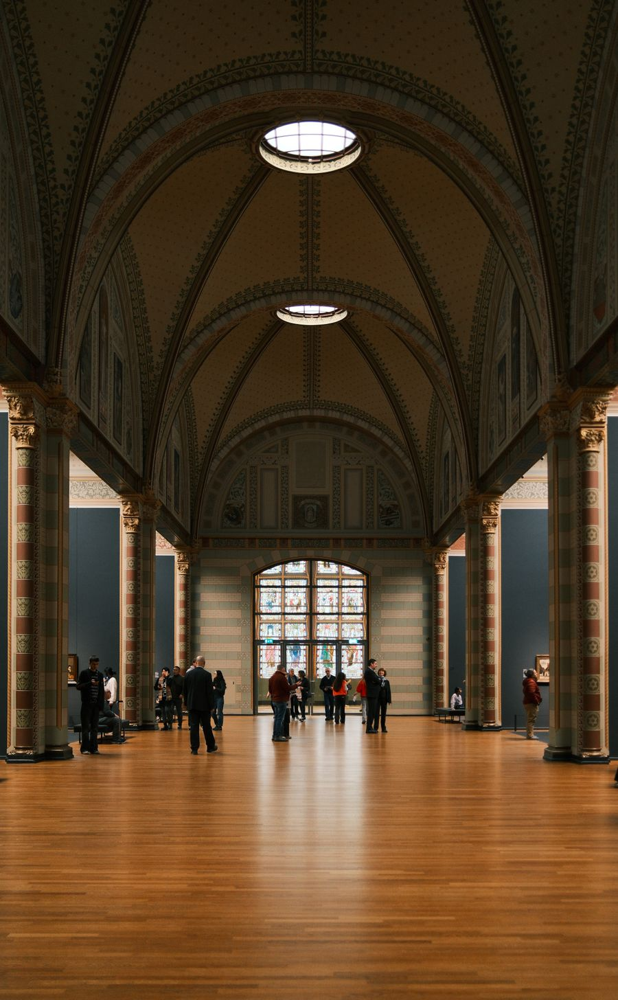
荷兰国立博物馆 Rijksmuseum
荷兰艺术的殿堂。伦勃朗《夜巡》与维米尔《倒牛奶的女仆》都在这里，建筑本身就是新哥特式杰作，中庭通道免费穿行。
- 建议时长 / 最佳时段
- 2.5 小时。开门 9 点即入，此时《夜巡》前几乎无人；荣誉廊在二楼，10 点后团队涌入。
- 交通
- 电车 2 / 5 / 12 路至 Rijksmuseum 站
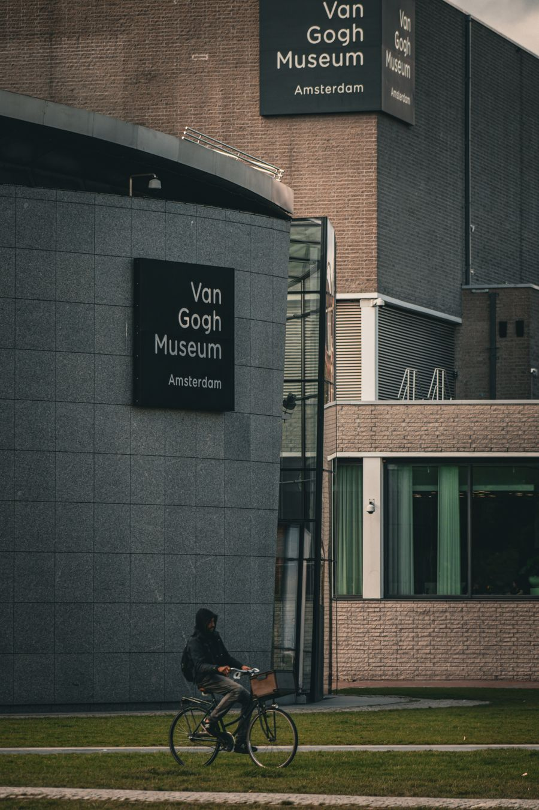
梵高博物馆 Van Gogh Museum
世界最大的梵高作品收藏——200 余幅油画、500 幅素描，按时间线铺开他从荷兰阴郁到法国明亮的光影蜕变。
- 建议时长 / 最佳时段
- 2.5 小时。开馆即入最安静；周五有夜场延长。
- 交通
- 电车 2 / 5 / 12 路至 Van Baerlestraat 站
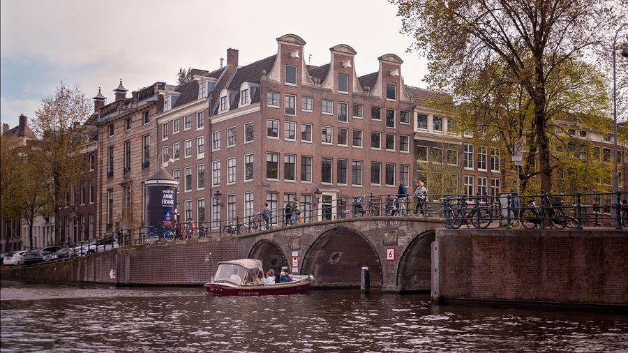
安妮之家 Anne Frank House
《安妮日记》的写作地，秘密后屋（Secret Annex）原样保留，再现二战中一家人的躲藏生活。不是博物馆式的陈列，而是一段被保留下来的空间。
- 建议时长 / 最佳时段
- 1.5 小时。早 8 点前后开门即入最安静。务必提前数周在网上锁定时段，这是全程最容易订不到的景点。
- 交通
- 电车 13 / 17 路至 Westermarkt 站
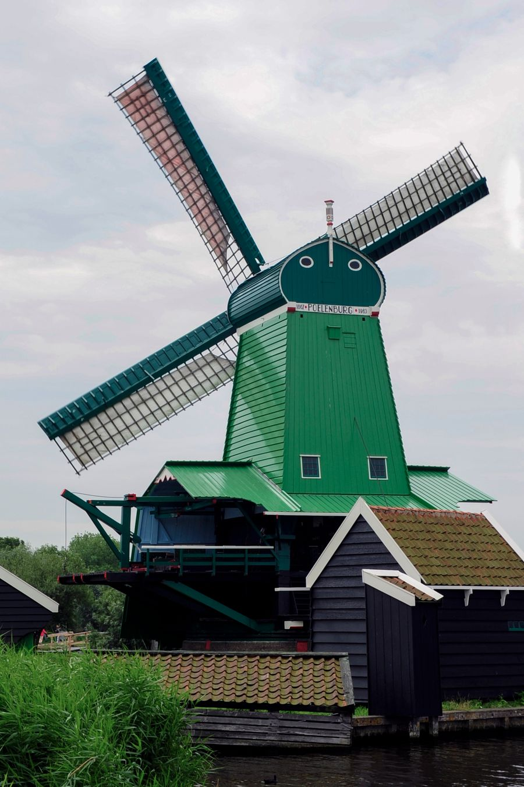
桑斯安斯风车村 Zaanse Schans
保存完好的 18–19 世纪赞河工业村落：绿色木屋、仍在运转的风车、奶酪作坊与木鞋工坊。离阿姆斯特丹最近的「荷兰明信片」场景。
- 建议时长 / 最佳时段
- 2.5–3 小时。早上 9 点前到，11 点后团队客成批涌入。周六上午人多，尽量早撤。
- 交通
- 火车至 Zaandijk Zaanse Schans 站（约 17 分钟，需在 Zaandam 换乘），步行 10 分钟过桥即到
约旦区 Jordaan
小众首选。阿姆斯特丹最有生活气的老街区——窄巷、独立小店、棕色咖啡馆、运河拐角的小桥。没有必打卡点，慢慢走就是最好的玩法。
- 建议时长 / 最佳时段
- 1.5–2 小时。傍晚店铺亮灯后氛围最好；周六有 Noordermarkt 市集。
- 交通
- 电车 13 / 17 路至 Westermarkt 站，从安妮之家出门即达
比利时 · 布鲁塞尔 / 布鲁日
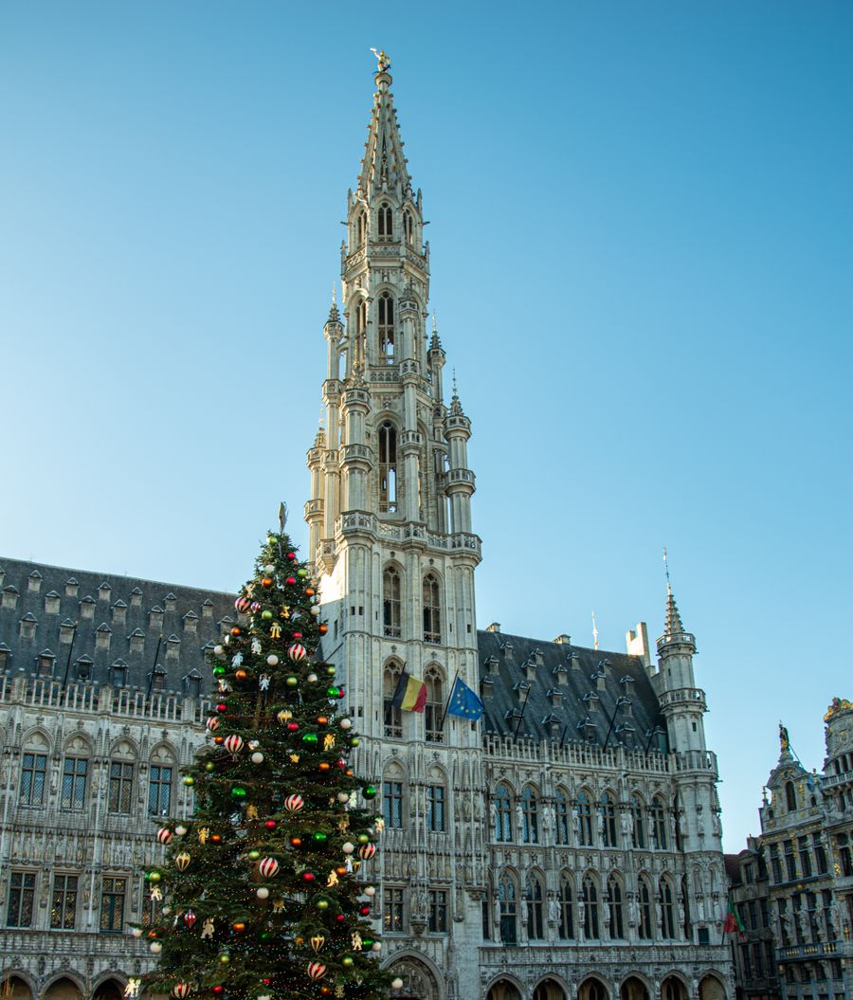
布鲁塞尔大广场 Grand-Place
雨果称之为「欧洲最美丽的广场」。四周 17 世纪行会建筑的金色立面在夕阳下几乎在发光，市政厅与国王之家分列两侧。
- 建议时长 / 最佳时段
- 1 小时（不含周边巷道）。傍晚金色阳光打上立面时最出片；夜晚灯光亮起后氛围完全不同，值得来两次。
- 交通
- 地铁 1 / 5 号线至 Gare Centrale 站，步行 5 分钟
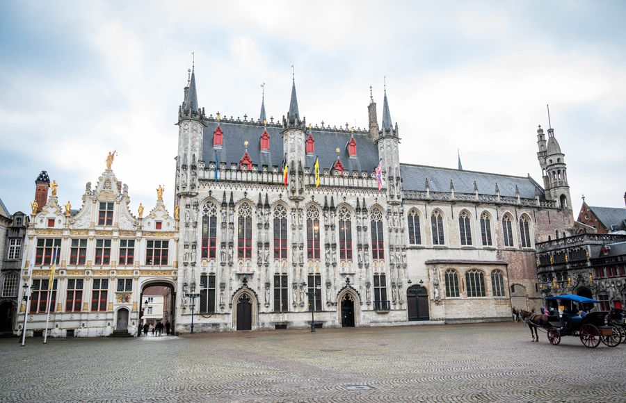
布鲁日钟楼 Belfry of Bruges
布鲁日老城的标志。83 米高的中世纪钟楼，爬 366 级狭窄台阶登顶，可以俯瞰全城连绵的红屋顶——这是布鲁日最值的一次体力支出。
- 建议时长 / 最佳时段
- 1 小时。9 点前到最好，旺季排队会很久。楼梯又陡又窄，务必穿好走的鞋。
- 交通
- 布鲁塞尔乘 IC 火车约 1 小时直达布鲁日站，步行 15 分钟到市集广场
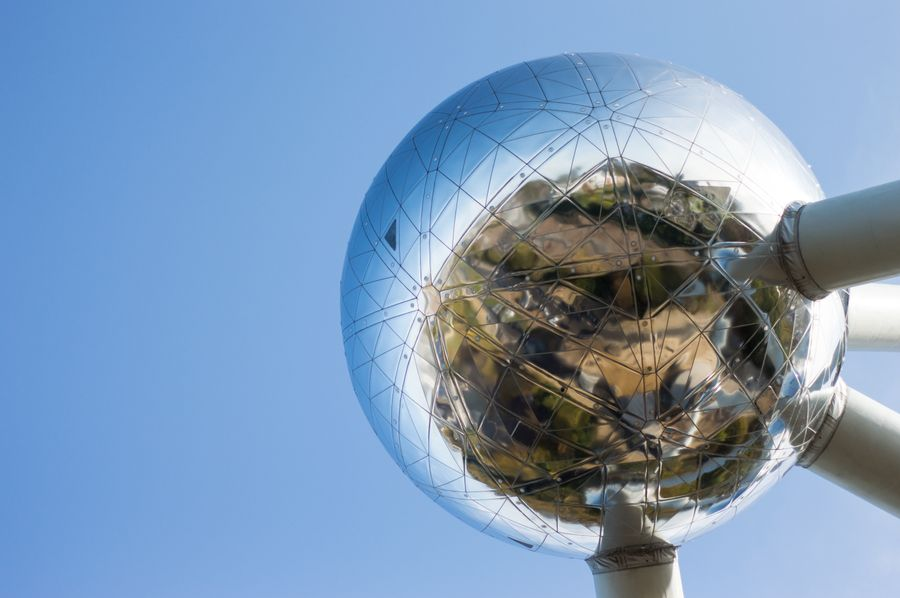
原子塔 Atomium
1958 年布鲁塞尔世博会留下的铁原子结构，比利时最知名的现代地标。乘高速电梯直达 102 米高的顶层球体，俯瞰整座城市。
- 建议时长 / 最佳时段
- 1.5 小时。建议 15:00 前登塔，避开正午强光；塔下仰拍最能凸显建筑体量。内部展览偏旧，主要为登顶观景。
- 交通
- 地铁 6 号线至 Heysel 站，步行 5 分钟
比利时皇家美术馆 Musées royaux des Beaux-Arts
从鲁本斯、勃鲁盖尔的老大师馆到马格利特博物馆，一条线看懂比利时艺术史。马格利特那间展厅是全馆最有辨识度的部分。
- 建议时长 / 最佳时段
- 2.5 小时。上午光线柔和，拍画作不易反光。
- 交通
- 地铁 1 / 5 号线至 Gare Centrale / Parc 站，步行 5 分钟
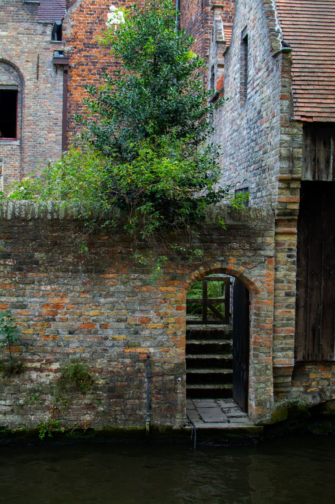
布鲁日历史中心 Historic Centre of Brugge
小众角度：大多数人只在市集广场拍照就走，其实老城南端的爱之湖与贝居安修道院才是布鲁日最安静的部分——游客密度骤降，白墙庭院与天鹅水景。
- 建议时长 / 最佳时段
- 1.5 小时。从钟楼步行约 15 分钟。傍晚游客散去后，整座老城才回到它本来的样子。
- 交通
- 布鲁日站步行 15–20 分钟，或市中心免费小巴
卢森堡 · 卢森堡市
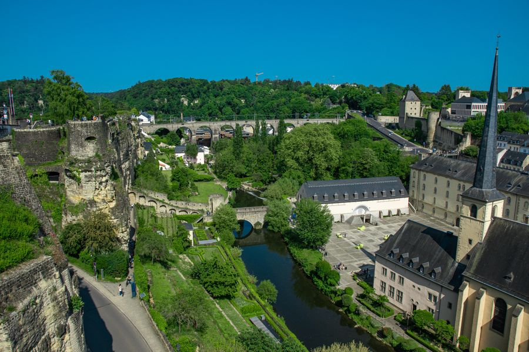
博克要塞 Bock Casemates
卢森堡被称为「北方的直布罗陀」的原因。1644 年起由西班牙人开凿、后被沃邦扩建的地下隧道网，最深处约 40 米，曾庇护数万市民。石拱长廊与炮口俯瞰峡谷的视角独一无二。
- 建议时长 / 最佳时段
- 1–1.5 小时。开门即到是唯一策略——不能在线订票，午后团队会排长队。雨后石壁沁凉，光线反而更出片。
- 交通
- 公交 5 / 9 / 10 / 11 / 14 路至 Badanstalt 站，步行 10 分钟；或在 Pfaffenthal Um Bock 站下车
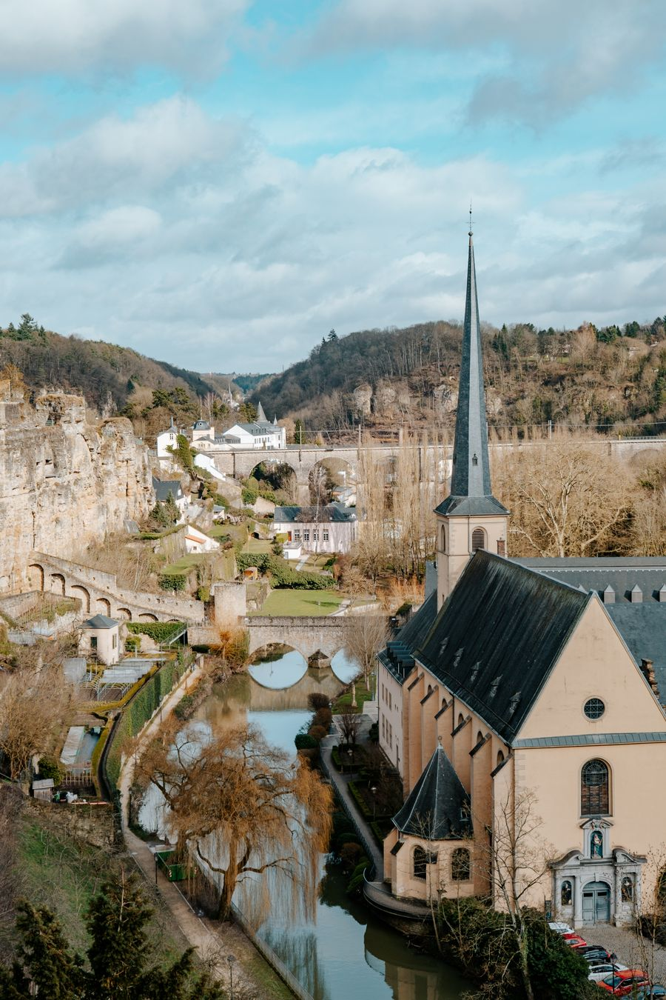
风景走廊 Chemin de la Corniche
1898 年就被称为「欧洲最美的阳台」。沿老城南侧城墙的悬崖步道，一边是 Grund 谷地与阿尔泽特河，一边是 Bock 岬角，每一步都是不同的城市剖面。
- 建议时长 / 最佳时段
- 30 分钟。全程平路，不费腿。黄昏最迷人——夕阳把峡谷与石墙晒暖，比登塔更有味道。
- 交通
- 公交 9 路至 Pfaffenthal Um Bock 站；或从博克要塞步行 5 分钟衔接
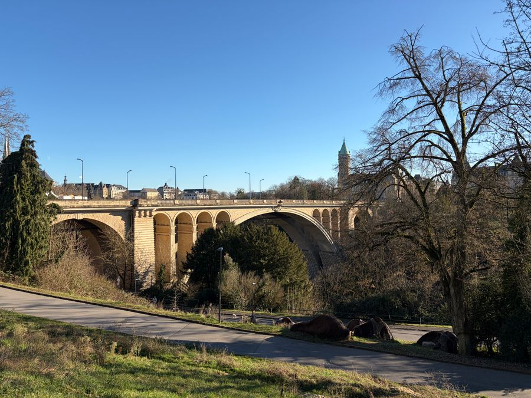
阿道夫桥 Pont Adolphe
卢森堡的地标。建于 20 世纪初、拥有当时世界上跨度最大的石拱，全长 153 米，横跨佩特罗斯大峡谷。站在桥中央往下看，城市被峡谷一分为二的落差最有冲击力。
- 建议时长 / 最佳时段
- 20 分钟。可与佩特罗斯大峡谷、宪法广场串成一条步行线。
- 交通
- 公交 8 / 9 / 10 / 18 路至 Hamilius 站，步行 5 分钟
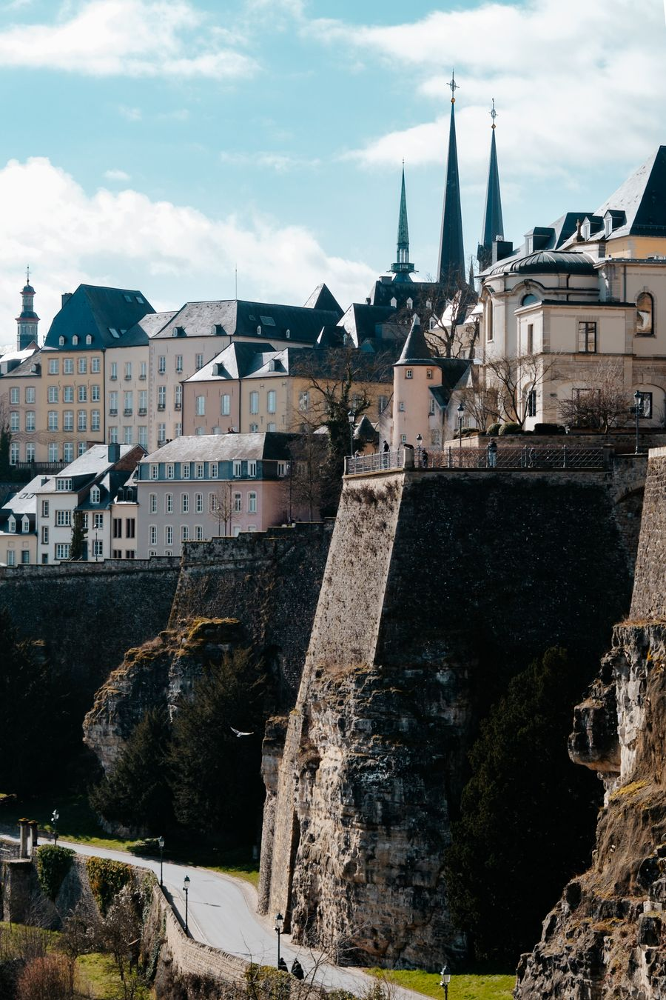
Grund 谷地 Grund
小众首选。老城下方的河谷街区，阿尔泽特河从中间流过，两岸是矮房与咖啡馆。从老城可以乘免费公共电梯直达谷底，是避开游客群、看清这座城市为何建在此处的地方。
- 建议时长 / 最佳时段
- 1 小时。从风景走廊经公共电梯（Ascenseur Plateau St Esprit–Grund）下行，全程免费。傍晚河边餐厅亮灯后更惬意。
- 交通
- 老城公共电梯直达；或公交至 Stadtbredimus / Grund 站
匈牙利 · 布达佩斯
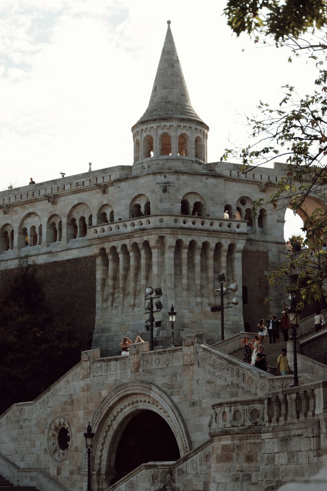
渔人堡 Halászbástya
布达佩斯最负盛名的全景机位。新罗马式观景平台，七座圆锥尖塔代表七个马扎尔部落。从回廊向东北望去，多瑙河、国会大厦与佩斯天际线尽收眼底。
- 建议时长 / 最佳时段
- 1–1.5 小时。上午 9:00–10:00 最好——游客少、光线顺光，国会大厦朝东的立面被阳光打亮，河面泛银波。
- 交通
- 从 Deák Ferenc tér 乘 16 路公交至 Szentháromság tér 站，约 15 分钟
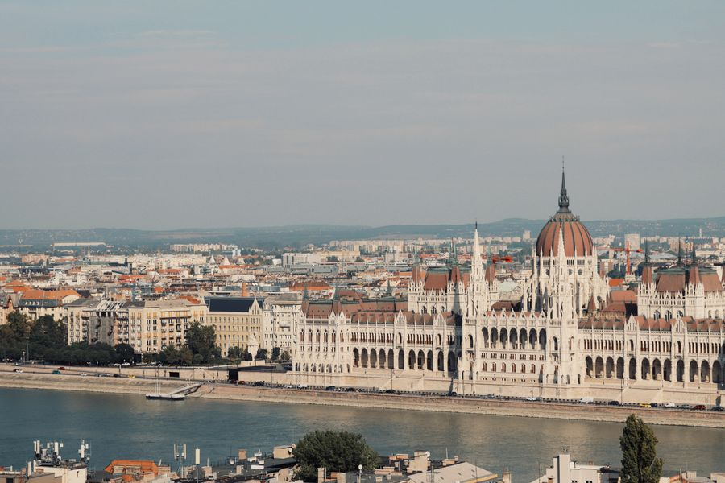
匈牙利国会大厦 Országház
1904 年竣工的新哥特式建筑，中央穹顶高 96 米——这个高度同时纪念匈牙利建国（896 年）与圣伊什特万加冕（1000 年）。内部穹顶大厅陈列着超过千年的匈牙利圣冠。
- 建议时长 / 最佳时段
- 外观 40 分钟 + 内部导览 50 分钟。旺季需提前至少一周在官网锁定英文场次，提前 30 分钟到主入口过安检。
- 交通
- 地铁 M2 至 Kossuth Lajos tér 站
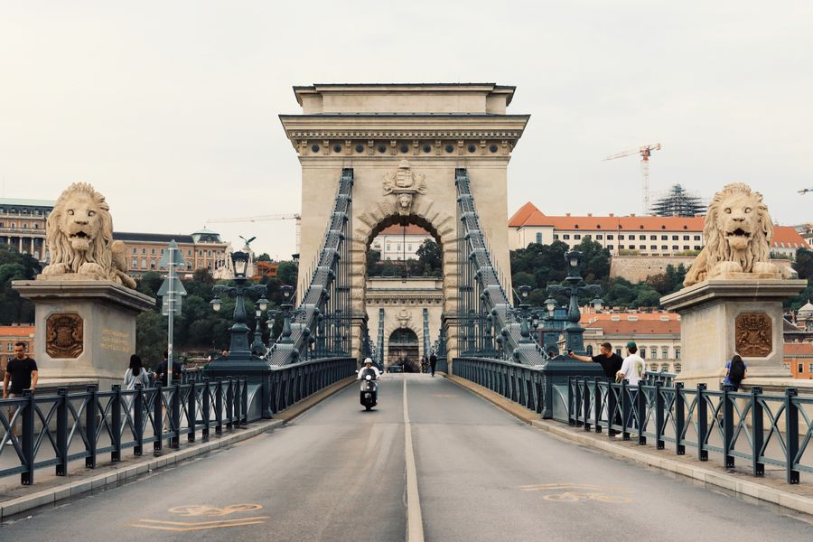
塞切尼链子桥 Széchenyi Lánchíd
布达佩斯最古老的桥，1849 年竣工，全长 375 米。桥头两尊石狮由雕塑家马赖什·亚诺什创作。它不只是过河的路，也是这座城市「左右岸合一」的象征。
- 建议时长 / 最佳时段
- 30 分钟（含往返拍照）。夜晚灯光亮起后从布达侧桥头回望佩斯最佳；5–10 月部分周末会封闭成步行区。
- 交通
- 地铁 M1 / M2 / M3 至 Deák Ferenc tér，步行 10 分钟
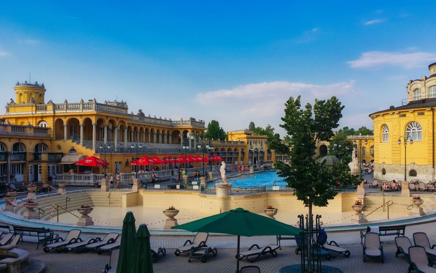
塞切尼温泉浴场 Széchenyi Gyógyfürdő
欧洲最大的药用温泉浴场，新古典主义建筑环绕三个露天大池。布达佩斯有 100 多处天然温泉、日均出水 7000 万升，「浴场之都」这个称号这里最能兑现。
- 建议时长 / 最佳时段
- 2 小时。早上 7 点去人最少，户外池在晨间冷空气里蒸汽最好看；傍晚则是另一种氛围。现场租泳衣贵且要排队。
- 交通
- 地铁 M1 至 Széchenyi fürdő 站，出站即达
多瑙河畔鞋履雕塑 Shoes on the Danube Bank
小众但有分量：60 双铸铁鞋履散落在河岸石堤上，尺寸从儿童鞋到成人鞋不等，纪念 1944–45 年被箭十字党民兵射杀后推入多瑙河的犹太人。雕塑没有任何铭文——正如策展人所言，「真正的纪念碑，是每位驻足者的沉默」。
- 建议时长 / 最佳时段
- 20 分钟。就在国会大厦南侧约 300 米，从国会大厦出来的顺路一站。
- 交通
- 地铁 M2 至 Kossuth Lajos tér 站，步行 3 分钟
体验
不做「拍照就走」的打卡，而是能真正进入当地生活的几件事。全部可在官网或本地平台预约，无需通过旅行社。
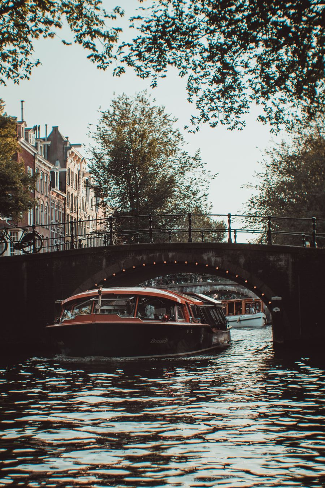
阿姆斯特丹运河巡游
阿姆斯特丹的 17 世纪同心运河（绅士运河、皇帝运河、王子运河）是世界遗产。从水面看这座城市，才会明白为什么房子都那么窄、窗户都那么大——17 世纪的税按门面宽度收。1 小时含多语音导览，敞篷船或玻璃顶船都有。
- 如何预约
- 各大码头现场购票或线上预订，班次密集；推荐订黄昏时段。
- 为什么在这里做、适合谁
- 零体力、全天候（雨天改玻璃顶船），适合抵达当天或走累的傍晚。雨天反而更有味道。
骑行运河与冯德尔公园
骑行是「最阿姆斯特丹」的移动方式。沿运河慢骑、穿过冯德尔公园（Vondelpark）环线，比坐电车多看一倍的城市细节。
- 如何预约
- 市中心与中央车站周边多家租车店，凭护照与押金即可；部分酒店提供免费或优惠租借。
- 为什么在这里做、适合谁
- 适合体力正常、想脱离旅游动线的人。务必走自行车道、不逆行、夜间开车灯——本地骑手车速很快。
布鲁日运河游船
40 分钟的小船穿行于中世纪运河之间，是从最低视角仰望这座城市的方式。船小、水浅，桥洞几乎擦着头顶过去，比步行多出十倍的空间体验。
- 如何预约
- 码头现场购票，班次密集，无需提前太久；旺季午后可能排队。
- 为什么在这里做、适合谁
- 适合所有人体力（全程坐船），尤其适合把布鲁日当作一天往返的行程——它能在最短时间里给你最完整的布鲁日印象。
多瑙河夜间游船
布达佩斯入夜后，国会大厦、布达城堡山与链子桥的灯光在水面上揉碎成金色涟漪。这是这座城市最不费力也最难忘的一次消费。建议选黄昏时段，白天与夜景一次看够。
- 如何预约
- 官网或本地平台预订，18:00 / 19:30 / 21:00 等多个班次可选。
- 为什么在这里做、适合谁
- 适合抵埠当晚或最后一晚。十月夜晚河面风大，务必带一件防风外套，甲板位比舱内值得。
废墟酒吧巡礼
废弃建筑改造而成的酒吧群，全球第一家废墟酒吧 Szimpla Kert 就在这里的 Kazinczy 街上。旧家具、涂鸦、废旧电视机堆成的装置——它不精致，但独一无二，是布达佩斯夜生活的灵魂。
- 如何预约
- 无需预约，20:00 后开始热闹。从 Szimpla Kert 出发，步行 5 分钟内还有 Fugazi、Instant 等。
- 为什么在这里做、适合谁
- 适合两人结伴的夜晚。周末深夜该区域醉酒年轻人较多，注意财物与同行节奏，避开明显混乱的场面即可。整体治安不差。
餐饮住宿
这一模块才点名具体店。行程模块只给「哪一片」，这里给「哪一家、在哪、多少钱、为什么值得」。评分来源：境外餐厅与酒店均为 Google 评分；价格均为参考价，以平台实时价格为准。
一、当地小吃 / 街头小吃
四国的国民级小吃，逛累了随手买一份就能吃。每项点名一家代表店。
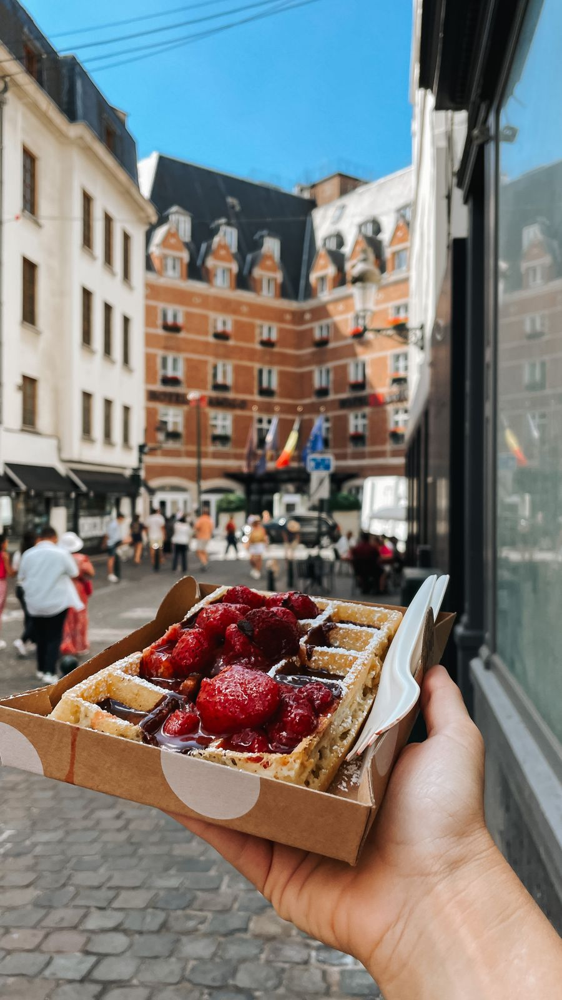
比利时华夫饼 Gaufre de Bruxelles / Liège
是什么：比利时有两种——布鲁塞尔华夫（长方形、轻盈、配鲜奶油与草莓）和列日华夫（不规则椭圆、内嵌珍珠糖、外脆内软）。口感上列日更甜更有咬劲。常见于老城小吃摊与长廊。
怎么点：直接说「une gaufre de Liège」，现做现吃，凉了就失去意义。
- 代表店
- Maison Dandoy（Rue Charles Buls 14, 1000 Bruxelles）——1829 年创立的百年老店，就在大广场旁。除华夫饼外，Speculoos 焦糖饼干也是本地招牌。
Google 评分：4.4（约 6000+ 条点评）
荷兰生鲱鱼 Haring
是什么：生的腌鲱鱼，配洋葱碎与酸黄瓜，可以整条仰头吞下（本地人的标准吃法），也可以夹在软面包里做成 broodje haring。口感咸鲜、油脂感重，配洋葱恰好解腻。
怎么点：指着摊上的鱼说「haring」，摊主会问要不要洋葱和酸黄瓜，默认都要。
- 代表店
- Stubbe's Haring（Singel, 1012 Amsterdam，中央车站与辛格运河边有摊）——本地人认可的鲱鱼摊，常年排队。
Google 评分：4.6（约 2000+ 条点评）
斯特罗普华夫 Stroopwafel
是什么：两片薄烤华夫中间夹焦糖糖浆，趁热吃时焦糖会拉丝。标准吃法是把饼搭在热咖啡杯口，让蒸汽把中间那层糖浆烘软——本地人从小这么吃。
怎么点：买现做的（现场压制的摊位），不要买包装好的，口感差距极大。
- 代表店
- Original Stroopwafels（Albert Cuypstraat 179, 1073 Amsterdam，阿尔伯特市场内）——现场手工压制，热气腾腾。
Google 评分：4.7（约 1500+ 条点评）
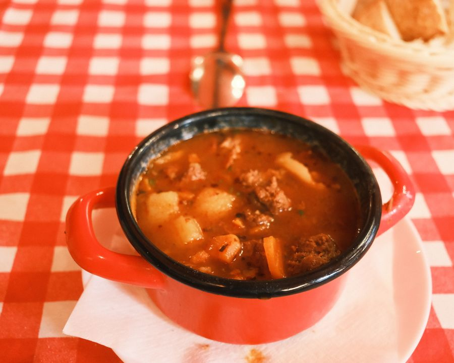
匈牙利牛肉汤 Gulyás
是什么：红辣椒粉（paprika）炖的牛肉浓汤，实际上是一道汤而不是炖菜，配面包吃。注意区分「gulyás」（汤）和「pörkölt」（炖肉），点错会上一大盘。
怎么点：点「gulyásleves」就是汤。本地小馆一份约 3,200 HUF，面包通常免费续。
- 代表店
- Gettó Gulyás（Király u. 100, 1077 Budapest）——对传统炖菜做了现代改良，牛肉汤配面包丸子是招牌。建议 18:30 前到，晚了要排队。
Google 评分：4.5（约 3000+ 条点评）
烟囱卷 Kürtőskalács
是什么：面团缠在木棍上炭火烤，外层滚满糖，烤到焦糖化后敲下来成中空卷。传统撒肉桂糖，现在也有坚果、可可和 Nutella 版本。
怎么点：刚出炉的最好吃，凉了就变硬。折着吃，先咬两头。
- 代表店
- Street Food Karaván（Kazinczy u. 18, 1075 Budapest）——紧邻 Szimpla Kert 的常设美食车广场，烟囱卷、langos、汉堡都有，是废墟酒吧前的标准一餐。
Google 评分：4.5（约 8000+ 条点评）
卢森堡炖菜 Judd mat Gaardebounen
是什么：卢森堡的国民菜——烟熏猪颈肉配蚕豆，分量扎实、口味偏咸香，是德法之间那种朴实的家常味。菜单上通常有英文注解。
怎么点：这道菜出餐慢，午市点它比晚市从容；配一杯本地白葡萄酒（Moselle）最地道。
- 代表店
- Am Tiirmschen（32 Rue de l'Eau, 1449 Luxembourg）——老城里做传统卢森堡菜的老牌小馆，本地人常来。
Google 评分：4.4（约 800+ 条点评）
二、值得专程去
不是「顺路吃一口」，而是值得为此调整一下路线的一餐。四个人一起点菜最划算。
The Pancake Bakery
值得专程去的理由：荷兰薄饼（pannenkoek）介于可丽饼与美式煎饼之间，这里做了 70 多种咸甜口味，从培根奶酪到苹果肉桂。就在安妮之家斜对面，参观完顺路吃，是约旦区最顺的一餐。出餐快、分量足、不贵——行程里最不需要犹豫的一顿。
- 招牌
- 培根奶酪薄饼、苹果肉桂薄饼。两人点一份咸一份甜刚好。
- 为什么值得
- 位置与安妮之家无缝衔接，价格在阿姆斯特丹中心区属于少数不虚高的。
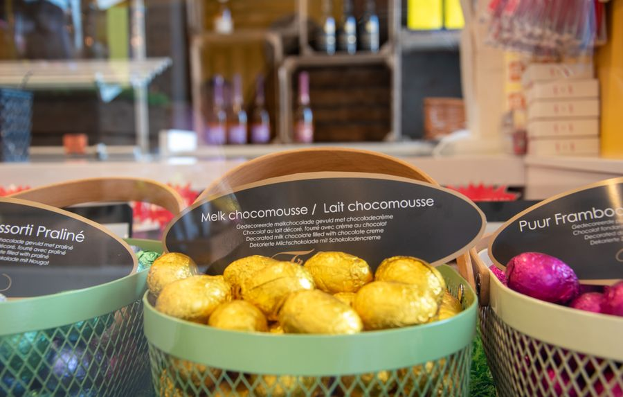
Fin de Siècle
值得专程去的理由：本地年轻人也排队的小馆，做比利时家常菜——炖牛肉、猪肘、青口贝，菜量极大、价格实在，还接受临时加桌。老城游客区里少数「不是游客餐厅」的地方，黑板菜单每天换。不接受预订，早到或晚到都比正点排队强。
- 招牌
- 啤酒炖牛肉（Carbonnade flamande）、青口贝配薯条。四人点三份主菜很可能吃不完。
- 为什么值得
- 用一个游客区地址提供非游客区的价格与分量，是布鲁塞尔性价比最突出的几家里的一家。
Menza
值得专程去的理由：布达佩斯「retro 风格」的代表餐厅，装潢是社会主义时期的匈牙利，菜却是正经的本地味。辣椒粉炖鸡配面疙瘩（Nokedli）是招牌，分量对两人来说偏大，主食可以少点一份。位置在安德拉什大街旁的广场上，逛完歌剧院或国家歌剧院过来正好。周末务必订位。
- 招牌
- Paprikás csirke（辣椒粉炖鸡配面疙瘩）、Gulyás 牛肉汤。
- 为什么值得
- 在旅游动线中心却保持着本地客占比；布达佩斯物价本就亲民，这一顿是全程人均最低的正餐之一。
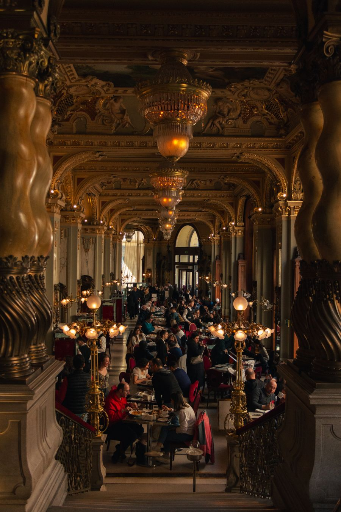
New York Café
值得专程去的理由：19 世纪末「佩斯的咖啡馆比伦敦巴黎还多」时代留下的最华丽一间，壁画、大理石柱、水晶灯，被认为曾是该报社《纽约世界报》所在地。它不是靠咖啡出名，是靠空间出名——这本身就是布达佩斯帝国时代的一件展品。旺季排队很长，建议开门即到或下午茶时段来。
- 招牌
- 匈牙利式早餐、Dobos 蛋糕、精品咖啡。价格偏高，本质是「为氛围付费」。
- 为什么值得
- 若只看一个「奥匈帝国式奢华空间」，就是这一间。适合安排在 10/08 上午或下午茶时段。
三、住宿推荐
两人同行为朋友关系，全程选双床房（Twin）。原则是一城一个基地、不中途搬家——四次落脚点覆盖全部 8 晚。境外酒店评分来源为 Google，价格为平日参考价。
阿姆斯特丹 · 中央车站 / 水坝广场一带
为什么住这里：抵达当天从史基浦机场坐火车直达中央车站，不用换乘；三天的行程（博物馆区、乌得勒支 / 风车村、约旦区）全部靠电车与步行覆盖；10/04 转场布鲁塞尔时也是从中央车站发车，零换乘、拖行李距离最短。这一带房费是全市最高，但省下的时间与体力更值。
- 推荐 1 · DoubleTree by Hilton Amsterdam Centraal Station
- 距中央车站步行 5 分钟，双床房空间在同价位里偏大，早餐品类多。Google 评分 4.4（约 7000+ 条点评）。约 ¥1625 / 晚起。
- 推荐 2 · NH City Centre Amsterdam
- 距水坝广场步行 5 分钟，部分房型有运河景观，房间干净宽敞。国庆窗口价约 ¥1169 / 晚起。
- 推荐 3 · ibis Styles Amsterdam Central Station
- 中央车站步行 3 分钟，部分房型正对运河，隔音做得不错。预算优先时选它，约 ¥1000 / 晚起。
- 动线说明
- 三晚不换酒店。10/02、10/03 两天都以这里为圆心往返。
布鲁塞尔 · 大广场 / 中央车站一带
为什么住这里：布鲁塞尔的景点高度集中在老城，大广场步行 10 分钟范围内几乎覆盖全部必去项；地铁 1/5 号线在中央车站交汇，去原子塔（6 号线）、去布鲁日（任意车站 IC）都方便。10/06 从布鲁塞尔出发去布鲁日再去卢森堡，把行李寄存在南站可以省一趟回程。
- 推荐 1 · Novotel Brussels off Grand Place
- 距大广场步行 2 分钟，双床房标准间面积舒适，电梯与行李通道顺畅。Google 评分 4.4（约 4000+ 条点评）。约 ¥1200 / 晚起。
- 推荐 2 · Ibis Brussels off Grand Place
- 同集团的经济档，位置几乎一样但价格低约三成，房间偏小。预算优先时选它，约 ¥850 / 晚起。
- 动线说明
- 两晚不换酒店。10/05 全天在布鲁塞尔，10/06 早上退房寄存行李后去布鲁日，傍晚返程直接南下卢森堡。
- 安全提示
- 大广场周边与布鲁塞尔南站周边扒手较多，背包背在身前，证件与现金贴身放。南站夜间尽量乘地铁或打车，不要步行穿行。
卢森堡市 · 火车站 / 老城一带
为什么住这里：卢森堡只停一晚，且第二天下午要赶飞机（乘公交去 LUX 机场）。这一晚的核心不是舒适度，而是「晚到能快速入住、早走不折腾」。卢森堡全国公共交通免费，所以即使住在车站一带，去老城景点也是几站免费公交的事。
- 推荐 1 · Novotel Luxembourg Centre
- 位于老城与车站之间，步行 10 分钟到 Gare、15 分钟到 Place d'Armes，位置最均衡。Google 评分 4.4（约 2500+ 条点评）。约 ¥1300 / 晚起。
- 推荐 2 · Hotel Empire
- 就在中央车站对面，出站即达，适合 20:30 抵达当天最快落宿。房间简洁。约 ¥950 / 晚起。
- 动线说明
- 只此一晚，不涉及搬家。10/07 上午行李寄存在酒店或车站，下午回来取后再去机场。
布达佩斯 · 佩斯第五区（Deák Ferenc tér）
为什么住这里：第五区是布达佩斯的绝对市中心——国会大厦、圣伊什特万圣殿、多瑙河岸、瓦茨街全在步行范围。更重要的是 Deák Ferenc tér 是 M1/M2/M3 三线交汇点，16 路公交上城堡山、100E 机场巴士直达机场，最后一天 10:30 出发赶 13:00 的回国航班最稳。布达佩斯物价亲民，同预算在这里能住到更好的房。
- 推荐 1 · NH Collection Budapest City Center
- 第五区核心，步行可达多瑙河与圣伊什特万圣殿，双床房面积大、隔音好，早餐品质稳定。Google 评分 4.5（约 4000+ 条点评）。约 ¥950 / 晚起。
- 推荐 2 · Maverick Athenaeum
- 第五区性价比之选，位于一栋历史建筑内，中庭挑高漂亮，双人间价格明显低于连锁品牌。约 ¥620 / 晚起。
- 推荐 3 · IntercityHotel Budapest
- 火车站（Keleti）旁，连锁品质稳定，往返车站最方便。约 ¥700 / 晚起。
- 动线说明
- 两晚不换酒店。10/08 全天在布达与佩斯之间往返，10/09 退房后直接乘 100E 去机场。
购物
四国的购物区与伴手礼。原则很简单：能吃的当场买、能带的选择在最后一站集中买——布达佩斯物价最低，是全程最适合收尾囤伴手礼的城市。
购物区 / 商圈
九小街 De 9 Straatjes
阿姆斯特丹最值得逛的小店群：古着、独立设计、手作饰品、复古海报、小众香水。没有大牌旗舰店，全是需要慢慢翻的铺子，比卡尔弗街（Kalverstraat）那种连锁大街有意思得多。
圣于贝尔长廊 Galeries Royales Saint-Hubert
1847 年落成的欧洲最早玻璃拱廊之一，两侧全是巧克力店、书店与老牌咖啡馆。比利时的巧克力品牌在这里最集中，一次可以对比好几家再决定买哪盒。
中央市场大厅 Central Market Hall
布达佩斯最大、最老的室内市场，一层是辣椒粉、鹅肝酱、贵腐酒、香肠，二层是熟食档与手工艺品。这里是全程买伴手礼效率最高的一个点——辣椒粉与 Tokaji 贵腐酒在本地买，价格比机场便宜一半以上。
特色伴手礼
| 伴手礼 | 是什么 / 怎么挑 | 去哪买 | 参考价 |
|---|---|---|---|
| 荷兰焦糖华夫 | 两片薄华夫夹焦糖浆。买铁盒装比纸袋更抗压；认准「Gouda / Dutch」产地标签 | 阿尔伯特市场、超市 Albert Heijn | ¥30–60 |
| 荷兰奶酪 | Gouda 与 Edam 最常见。真空小包装可带，未灭菌生奶奶酪部分国家有限制 | 阿尔伯特市场、史基浦机场 | ¥50–150 |
| 比利时巧克力 | 认准 praline（夹心）与 couverture（调温）两类。Neuhaus、Pierre Marcolini、Godiva 都在长廊与老城 | 圣于贝尔长廊、大广场周边 | ¥80–300 / 盒 |
| 比利时啤酒 | 修道院啤酒（Trappist）认准六角标。玻璃瓶托运需缓冲，建议买 330ml 小瓶 | 老城超市 Delhaize、长廊酒类店 | ¥15–60 / 瓶 |
| Speculoos 焦糖饼干 | 肉桂味脆饼，配咖啡极好。Lotus 是超市款，Dandoy 是手工款 | Maison Dandoy、超市 | ¥25–70 |
| 匈牙利辣椒粉 | 认准「Édes」（甜）与「Csípős」（辣）两种，甜味是炖菜的基底。密封罐装比纸包好带 | 中央市场大厅一层 | ¥20–50 |
| Tokaji 贵腐酒 | 标「Aszú 3–6 Puttonyos」，数字越高越甜越贵。这是匈牙利国宝级甜酒，本地买价格最优 | 中央市场大厅、机场免税店 | ¥150–600 |
| 匈牙利鹅肝酱 | 块状（bloc）比慕斯（mousse）更有口感。罐头装可常温携带，适合托运 | 中央市场大厅 | ¥60–200 |
| Herend 瓷器 | 匈牙利国宝级手绘瓷器，小手工艺品如小摆件、杯碟套组最好带 | 安德拉什大街品牌店、瓦茨街 | ¥200+ |
!携带与托运注意
- 液体与酒类必须托运；免税店买的酒若中转需保持密封袋完好。
- 巧克力怕热：10 月气温不高，但全程 9 天要走 4 座城市，最后在布达佩斯买最省心。
- 非欧盟退税：单店消费满一定金额可办退税（比利时 €125、荷兰 €50、卢森堡 €74、匈牙利 55,000 HUF 起），需在最后离境机场办理并出示商品。匈牙利是本次的离境国，退税要在布达佩斯机场完成。
- 入境中国限额：酒类免税额度为 1500ml（酒精 12 度以上）或 2 瓶；超额需申报。肉类制品（含部分香肠）禁止携带入境。
当地贴士
签证、交通、支付、天气与安全——都是会直接影响行程决策的实用信息，不是泛泛的旅行常识。
签签证 · 申根（最关键的一项）
- 办哪国签证：荷兰。Schengen 规则是「向停留夜数最多的国家申请；若夜数相同，向首个入境国申请」。本行程夜数分布为：荷兰 3 晚、比利时 2 晚、卢森堡 1 晚、匈牙利 2 晚，荷兰最多，因此必须向荷兰使领馆/签证中心递交申请。向其他国家递交属于无效申请。
- 办理时长：官方标准为受理后 15 个日历日，旺季可能延长至 45 天。最早可提前 6 个月递交、建议至少提前 6–8 周。10 月 1 日出发，8 月上旬就应着手准备。
- 核心材料：护照（有效期需超过离境日 3 个月以上、至少两页空白）、申请表、符合规格的证件照、全程机票与酒店订单、覆盖全程的申根医疗保险（保额不低于 3 万欧元）、资金证明（银行流水）、在职/在读证明、户口本。
- 生物信息采集：首次申请需本人到场录指纹，59 个月内已录过申根指纹的通常可免。
- 必须按申请时的行程执行：拿到签证后若行程变动（如减少荷兰夜数），理论上需重新评估。本行程 3 晚荷兰是签证依据，不要临时改成荷兰只住 1 晚。
- 90/180 规则：申根区任意 180 天内累计停留不得超过 90 天。本行程 9 天，远在限额内。
- EES 生物识别系统：2026 年 4 月起已全面运行，首次入境需在口岸采集指纹与人脸、取消护照盖章。通关时间可能变长，入境当天的后续安排要留出余量。
- ETIAS 不适用：ETIAS 针对免签国公民，中国护照持有人属需签证类别，不需要也不能申请 ETIAS。
- 出行前务必再次核实最新政策：各国签证要求与系统上线时间会调整，以荷兰驻华使领馆、签证中心官网的当期公告为准。
假公共假期 · 与你行程的冲突点
- 德国的「10/03 统一日」不影响本行程（不经德国），但当天全欧铁路会有额外客流。
- 中国的国庆黄金周（10/01–10/07）是最大变量：中国出境游客集中在荷兰、比利时，这几天的阿姆斯特丹住宿与博物馆预约最紧张。机票、酒店、梵高博物馆与安妮之家门票必须尽早锁定。
- 荷兰：10 月无全国性假期。比利时：10 月无联邦假期。卢森堡：10 月无全国假期。匈牙利：10 月 23 日是国庆日（1956 年革命纪念日），但你在 10/09 已离境，不受影响。不过 10 月上旬布达佩斯会开始为 23 日做布置，部分广场可能围挡。
- 10 月 25 日中欧夏令时结束（改回冬令时），你在 10/09 离境，全程都在夏令时内，中欧比北京晚 6 小时——不需要调表。
- 周日商店关门：荷兰与比利时的商店周日普遍 12:00 后才营业，部分小店全天休息。行程中的 10/04 是周日，别把它安排成购物日。
车交通 · 四国铁路与市内
- 全程动线：阿姆斯特丹 →（Eurostar 1h50m / ECD 2h08m）布鲁塞尔 →（IC 3h，每小时一班，无需订座）卢森堡 →（飞机 2h10m）布达佩斯。四段均无需租车。
- 阿姆斯特丹 ↔ 布鲁塞尔：Eurostar（原 Thalys）需订座、越早越便宜，提前 2–3 个月可低至 €25–35；Eurocity Direct 不用订座、票价固定，灵活性更好，但到的是 Amsterdam Zuid 而非 Centraal。
- 布鲁塞尔 ↔ 卢森堡：比利时国铁 IC 直达，票价固定 €21.30（二等座）、全天任意一班有效，不用提前买也不用订座，售不完。注意末班车。
- 卢森堡国内公交全部免费（2026 年仍执行），电车、公交、市内火车直接上车，不用买票。
- 阿姆斯特丹市内：GVB 运营电车/地铁/公交，可买 1–7 日票无限次乘坐；也可直接用支持闪付的银行卡刷闸机。上车上闸都要「check in / check out」，漏刷会被按最高票价扣费。
- 布鲁塞尔市内：地铁、有轨电车、公交一票通用，有一小时票、天票和「天团体票（可 5 人共用）」。电车门要自己按按钮开。无票乘车被查到罚款很重。
- 布达佩斯市内：地铁 M1–M4 + 2 路有轨电车（沿多瑙河，风景最佳）+ 16 路公交（上城堡山）。纸质票上车前必须打孔（validate），买了票忘记打孔会被按逃票处理。两人可买 72 小时团体票。
- 布达佩斯机场往返：100E 机场巴士直达 Deák Ferenc tér，约 40 分钟，是最快的方式。打车用 Bolt 或 Főtaxi，机场到市区约 6,000–9,000 HUF。
- 跨国列车行李：欧洲列车一般不限件数也无称重，但行李架空间有限；Eurostar 建议把大件放在车厢两端或座位上方。
钱支付 · 货币与刷卡
- 货币三种：荷兰、比利时、卢森堡用欧元（EUR）；匈牙利用福林（HUF），匈牙利不用欧元，别只带欧元过去。换算参考：1 元人民币 ≈ 50 福林（速记：福林数去掉两个 0 再乘 2）。
- 刷卡覆盖率很高：四国景点、餐厅、商店基本都接受 Visa / Mastercard，但布达佩斯的街头小吃摊与部分售票窗口仍只收现金，建议随身带 10,000–20,000 HUF 备用。
- 取现优于换汇：布达佩斯市区找正规 Change 兑换所或直接用银联/Visa 在 ATM 取现，汇率好过机场与街头兑换点。机场汇率最差。
- 动态货币转换（DCC）陷阱：刷卡时若被问「用人民币还是当地货币结算」，一律选当地货币（EUR/HUF），选人民币会被加收 3–5% 的转换费。
- 小费：荷兰、比利时、卢森堡服务费通常已含在账单里，凑整即可；匈牙利餐厅常见在账单外加 10–15%，结账前看清是否已含服务费。
- 退税：四国都是欧盟成员国（匈牙利亦为欧盟国），但退税需在最后离境的欧盟机场办理。本次在布达佩斯机场离境，所有国家的退税单都必须在布达佩斯机场一次性提交，且要出示商品。
天天气与穿搭 · 10 月初
- 气温区间：阿姆斯特丹 8–15°C、布鲁塞尔 8–16°C、卢森堡 7–15°C、布达佩斯 9–18°C。四地都进入秋季，早晚温差大，布达佩斯白天最暖。
- 降水：荷兰与比利时秋雨频繁，多为短时阵雨；卢森堡与布达佩斯降水较少。全程按「薄内搭 + 防风外套 + 一件可收纳的雨衣」打包最实用，欧盟国家雨伞贵且不好带。
- 穿搭重点：布鲁日钟楼 366 级窄台阶、卢森堡要塞隧道、布达城堡山石板路——全程大量石板路与台阶，务必穿好走的鞋，不要穿新鞋。
- 泡温泉：塞切尼温泉需自备泳衣与拖鞋，现场租借贵且要排队。带一条速干毛巾。
- 防晒：10 月欧陆紫外线已弱，但晴日中午在渔人堡、风景走廊等开阔观景点仍有日照，帽子即可。
- 插头：四国均为欧标两圆孔插座（Type C/F），电压 230V。中国设备需带转换插头；多国转换插头一个通用即可。
安安全与礼仪
- 布鲁塞尔是全程防盗重点：大广场周边、中央车站与南站周边扒手较多，背包背在身前，证件与现金贴身放。有游客在跨国列车上整包被拿走的记录——行李不要放在视线之外的行李架远端，贵重物品随人。
- 阿姆斯特丹红灯区：可正常步行穿过，但严禁对橱窗拍照，拍摄会被制止甚至引发冲突。夜间该区域人杂，两人结伴即可。
- 布达佩斯废墟酒吧区：整体治安不差，但周末深夜醉酒年轻人较多，避开明显混乱的场面、看好随身物品。
- 餐厅与酒吧：欧洲主要城市的酒吧接受刷卡，但若对方只收现金且不让看账单，换一家。
- 礼仪：荷兰与比利时人直接、讲效率，排队与轻声交谈是基本；匈牙利人相对内敛，进店主动打招呼（Jó napot）会受欢迎。餐厅小费非强制但常见。
- 紧急电话：欧盟全境统一 112（警察 / 救护 / 消防）。中国驻当地使馆电话建议出行前存入手机。
- 证件备份：护照首页、签证页、机票与酒店订单拍照存云端，另存一份纸质复印件随身——丢失时能大幅加快补办与报案。
- 保险：申根签证要求医疗保额不低于 3 万欧元，建议同时覆盖行程取消、行李与财物损失。
未安排的景点清单
这些地方都值得去，但没能排进每天的动线——有的是顺路度不高，有的是与已选内容重叠，有的是时间实在不够。勾选你感兴趣的，底部按钮会生成一段可以直接粘贴给 AI 的「重排请求」。
生成编辑行程文字
勾选上方你感兴趣的景点（可跨城市多选），点按钮生成一段可直接粘贴给 AI 的结构化请求。这段文字会自包含目的地、天数、时间盒、现有每日主题与你选择的景点清单。